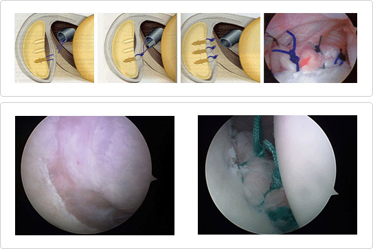

Shoulder dislocation mostly occurs when people hit their shoulder on the groundwhile exercising or because of an accident. However, the patterndepends on the age. 90 percent of people’s shoulders below the age of 20 are habitually dislocated. People over 40 usually exhibit rotator cuff tear instead of habitual shoulder dislocation.
